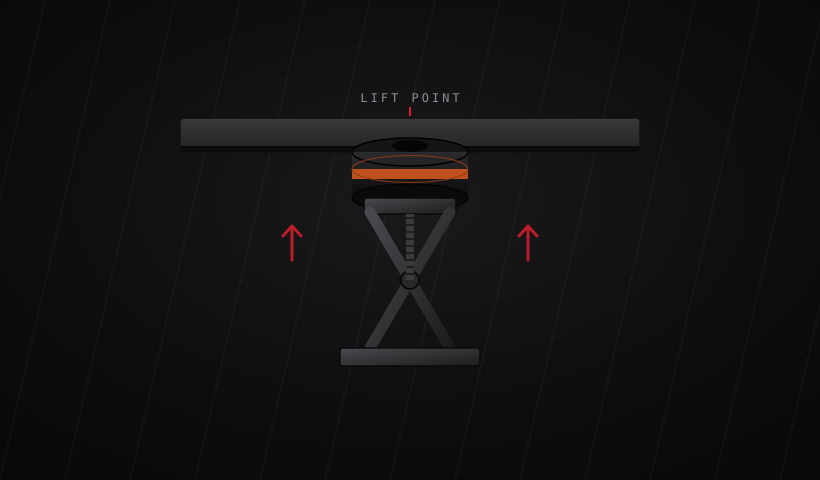

DIY / Maintenance / Tire Rotation Guide
// DIY Guide
Tesla's official rotation process — uniform across 2020–2026 Model Y, with the pattern rules that change based on your tire setup.

This process is sourced from official Tesla documentation and is uniform across every Model Y year and trim, 2020–2026. What changes is the reinstall pattern — it depends on whether your tires are offset, staggered, or directional, so read Step 2 carefully before you start swapping wheels.
Use approved jack pads at the designated vehicle lift points, raise the vehicle safely, and remove all four wheels.
Inspect the tires to check whether they're offset (different front/rear sizes) or directional (marked with a sidewall arrow), then reinstall according to these rules:
Mount the wheels back onto the vehicle and torque all lug nuts to 129 lb·ft (175 Nm) using a 21mm socket.
Sit inside the vehicle and turn on the display. Tap Controls > Service > Wheel & Tire > Tires, select your current tire season, and tap Reset. Confirm the Tire Service Mileage reads “Less than X miles/km ago.”
For an always-current reference, you can link directly to Tesla's Service Manual:
Steps above are accurate as of July 2026. Tesla updates its manuals as new trims and running changes roll out, so always cross-check against the official link above before you start.
This information is provided for reference only and does not replace Tesla's official documentation. modMY is not responsible for any damage, injury, or mechanical issues resulting from improper jacking, improper installation, under-torquing, over-torquing, or failure to follow proper procedure and safety precautions. Work on your vehicle at your own risk, and consult a qualified technician if you're unsure.